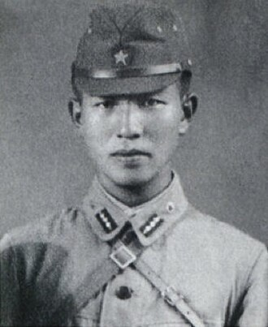
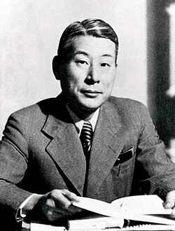
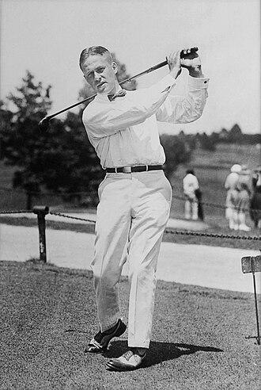
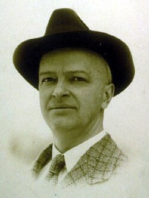
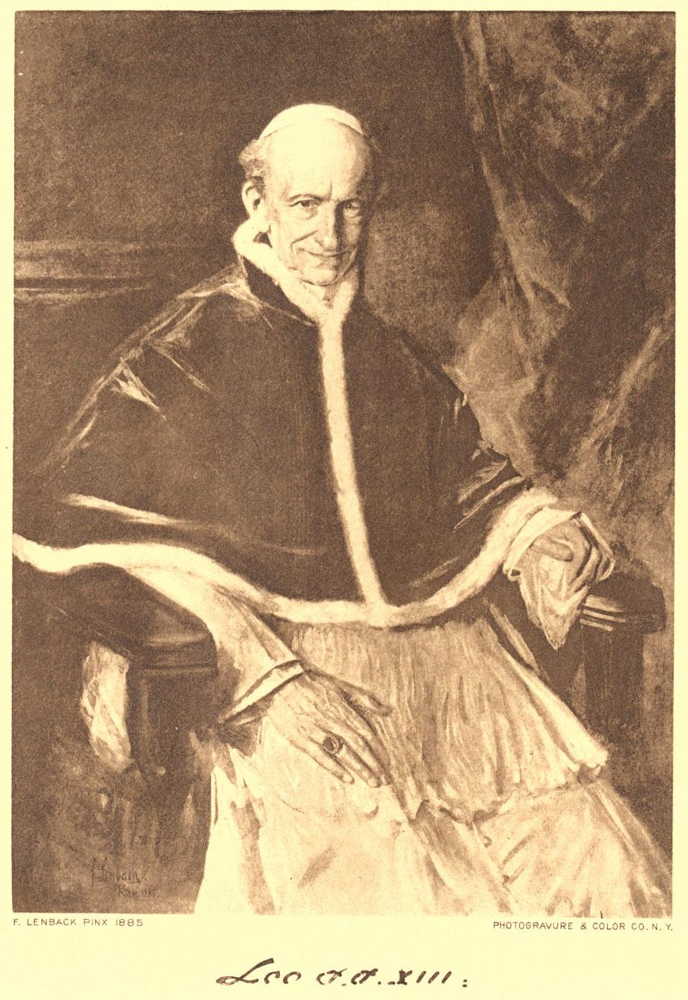
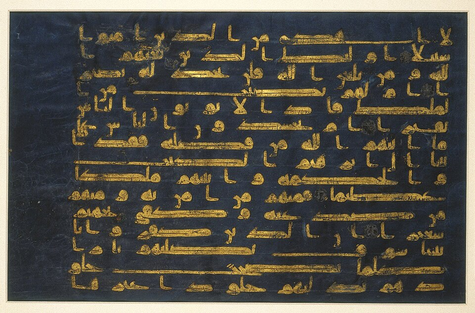
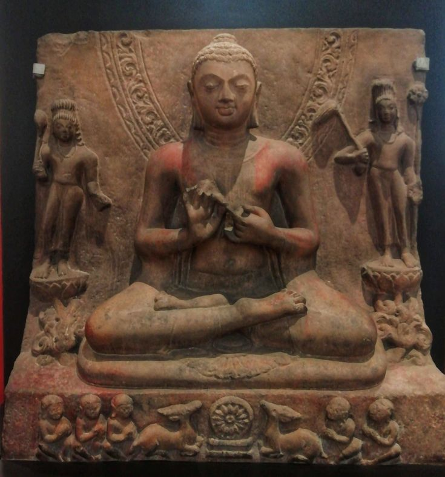

As a COMPASS
ethics guide you
Your ethics set your direction in work and life: which job you take, whom you serve, what you will not do. Repeated choices shape the person you become.
BUEN 594 · Ethics panel
Tuesday, November 10 · 12:40 p.m.
Fox Commons, Business and Entrepreneurship Center
ethics guide you
Your ethics set your direction in work and life: which job you take, whom you serve, what you will not do. Repeated choices shape the person you become.
ethics implicate you
Work often offers no clearly right answer, and someone gets let down, sometimes you. Not choosing is itself a choice, with consequences. A hard look can sometimes still turn up a win-win solution.
ethics test you
Choosing under pressure carries a toll and a thrill. It weighs on your body, emotions, conscience, and relationships, and it can show you who you are.
Our guests on November 10 include
Each of them was new at work once, with little authority and something at stake.

On Lubang, Onoda held to his military orders long after Japan surrendered. He and his companions took rice and livestock from Filipino residents. Source

During the 2016 campaign, Cohen arranged payments to suppress stories about Donald Trump. He pleaded guilty to campaign-finance violations. Source

At the 1925 U.S. Open, Jones reported that his ball had moved. He took the penalty himself and went on to lose in a playoff. Source
In Montgomery in 1955, Parks refused to give up her bus seat under segregation. Her arrest helped set the bus boycott in motion. Source

You lead a team. Someone you’ve worked with for years asks for an exception to a rule you’ve promised to apply fairly.
Answer both questions to place your dot.
See how each type can help or harm someoneYou are interning with a youth basketball program. All season you have told your players that everyone gets fair playing time. Now, in close games, the head coach plays only the starters, and the kids you coached sit on the bench. What do you do?
A donor believes a shelter serves U.S. citizens. Intern Jenny knows it serves Central American immigrants who are not U.S. citizens. Her fundraising director lets the misunderstanding stand and accepts a large check.
With a scholarship deadline tomorrow, a supervisor tells intern Chris to copy a withdrawn applicant’s work into another applicant’s submission. Chris says he is uncomfortable. The supervisor says that is how things are done locally and wants it finished.
In The Managed Heart (1983), Arlie Hochschild named the smile a job demands “emotional labor,” studying flight attendants paid to stay courteous with rude passengers. Some say that warmth is work and should be paid like work. Others say it is simply part of serving people well.
On The Pitt, unpaid medical student Joy Kwon walks out at the end of her twelve-hour shift while the emergency room is still in crisis, saying the staff need better boundaries. To some she is guarding against burnout. To others she is leaving her team when it needs her most. Source ↗
In September a recruiter’s TikTok told job seekers to finish their iced coffee before the interview, and Gen Z objected loudly. For some, the cup signals a casual attitude. For others, judging a drink instead of a candidate is snobbery about class and taste. Source ↗
Oshkosh Corporation, twenty miles south of campus, builds Pierce fire trucks, JLG lifts, mail trucks, and, through Oshkosh Defense, military vehicles. For some, building what soldiers drive is a calling and a good career. Others will not take that work. The choice is clearest before you sign. Source ↗
None of these is a scandal. Each is an ordinary moment at work where loyalty, generosity, discretion, fairness, and ambition can pull against each other.
The Buddha told lay followers to avoid five trades: weapons, human beings, meat, intoxicants, and poison (Anguttara Nikaya 5.177). Most traditions draw some such line. Where a society draws it moves, often within a single career, and it can move in either direction.
| Industry | Once | Now | What moved it |
|---|---|---|---|
| Tobacco | Glamorous, even doctor-endorsed | A pariah industry | The 1964 Surgeon General’s report, then lawsuits |
| Gambling | An illegal vice | State lotteries and sports-betting sponsors | Governments wanted the revenue; a 2018 Supreme Court ruling |
| Defense | Shunned after Vietnam; excluded from ethical funds | Back in many ethical funds | The war in Ukraine, 2022 |
| Plastics | “The future” | A pollution problem | Ocean waste and microplastics |
| Advertising | The glamour job | Surveillance and the attention economy | The data economy |
| AI | A utopian frontier | Questions about jobs, energy, copyright, and war | Rapid deployment |
| Meat | Simply normal | Questioned on climate and animal welfare | Science and a generational shift |
| Corporate medicine | A trusted profession | Anger at insurers, denials, and private equity | Rising costs |
| Cannabis | A crime | A licensed industry | State legalization |
| Nuclear power | Feared | Back as a climate answer | The carbon math |
Government service moves the same way. Each war, from Vietnam to Iraq to Gaza, reopens what it means to serve.
For many people, faith is the compass. It can also bring the conundrum and the crucible, when what you believe and what your work asks of you pull apart. Traditions that speak directly to work:

Pope Leo XIII on the dignity of workers, just wages, and the duties of employers.
Pope John Paul II: work exists for the person, not the person for the work.
Rabbi Tarfon: you are not required to finish the work, but you are not free to walk away from it.

Its opening verses condemn traders who give short measure: honesty in ordinary business is a matter of faith.

The five trades a lay follower should avoid, above: weapons, human beings, meat, intoxicants, and poison.
Swords into plowshares. The verse that became real for Matty in the basement of the Cadet Chapel; see My Three Cs.